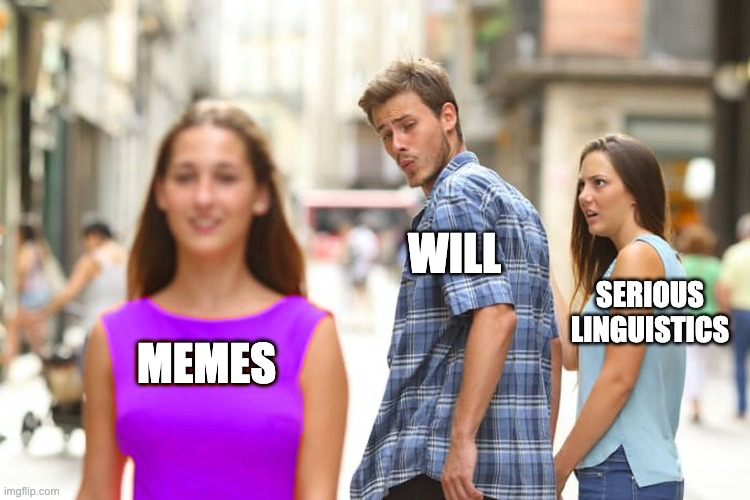
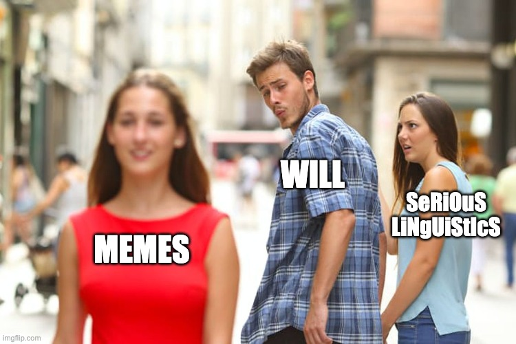
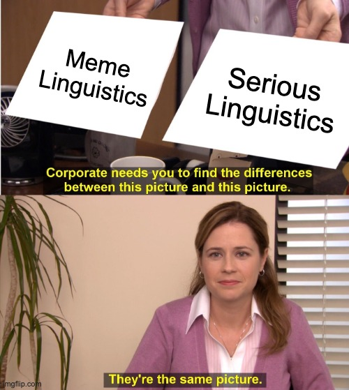

What is morphology?
How can we identify the components of a word?
What kinds of morphology exist?
How does this apply to memes?
What is a word?
What components make up words?
How are new words formed?
How are words stored in the mind?
How many parts does the word ‘recreated’ have?
How do we know?
cat, feline, lion, leopard, kitty, pspspspspsps, paw, neko
These are related only in meaning
cat, scatter, catastrophic, scathing, uncategorizable, catcher, catholic
These are related only in form
cat, kittycat, catty, catlike, cathouse, cat-and-mouse game, cattery, catio, catnap
These are related both in form, and in meaning!
‘cat’ is a meaningful chunk of a word
We use the term ‘morpheme’ to mean the smallest meaningful chunk which can be or be part of a word
Some words have one morpheme (‘cat’), and some have many (‘unrecognizable’)
start, stop, restart, past, lapsed, static, steady, still
These have similar meanings, and all have /st/
Is this a morpheme?
Why not?
Why do you say I’m wearing gray pants, rather than them being a part of me?
Is my watch a part of Will?
How can you tell his wedding ring isn’t just Will?
How can you tell his torso is an inherent part of Will?
You can use the plural -s or -ly or cat in a bunch of different words, including ones you’ve never heard before
You can’t use ‘st’ in a new context and preserve the ‘temporal boundary’ meaning
Group the data by shared elements of meaning
Within those groups, look for recurring patterns of form
Build hypotheses, then use them to make guesses about other bits of the data
Try to break your analysis with other forms from the language
| Finnish | English Gloss | Finnish | English Gloss |
|---|---|---|---|
| laulan | ‘I sing’ | yuon | ‘I drink’ |
| laulat | ‘You sing’ | yuot | ‘You drink’ |
| laulavi | ‘He sings’ | yuovi | ‘He drinks’ |
| laulamme | ‘We sing’ | yuomme | ‘We drink’ |
| laulatte | ‘You all sing’ | yuotte | ‘You all drink’ |
| laulavat | ‘They sing’ | yuovat | ‘They drink’ |
This is called ‘concatenative morphology’
Things which get ‘stuck on’ to base words are called ‘affixes’
cat, kittycat, catty, catlike, cathouse, cat-and-mouse game, cattery, catio, catnap
Sometimes, changes to what’s already there mark the difference
Remember the changing tones changing meaning in Otomí?
Also think about ‘run’ vs. ‘ran’, ‘sing’ vs. ‘sung’
‘record a song’ and ‘make a record’
This is referred to as non-concatenative morphology
If you can change just one component of a meme and modify the meaning, you know something about the meaning of the components
Memes have morphemes!
What changed about the form?
What changed about the meaning?







(Thanks, Yuri)

What does a given audio add to a TikTok?
Why does cat color matter in a cat meme?
Why add a particular song to a video?
Morphology: The study of words, word formation, and word storage, among other elements of linguistics
Morpheme: The smallest contrastive unit of meaning in a language, or, put differently, the smallest analyzable and usable unit of form and meaning.
Concatenative Morphology: Adding or changing meaning by adding or removing additional chunks of linguistic forms (e.g. prefixes, suffixes)
Non-Concatenative Morphology: Adding or changing meaning by modifying the existing form of the word
Sets of words like ‘glimmer’, ‘glitter’, ‘gleam’, ‘glamorous’, ‘glowing’, ‘glance’ which share form and meaning, but no morphemes are often called phonaesthemes
This is awesome!